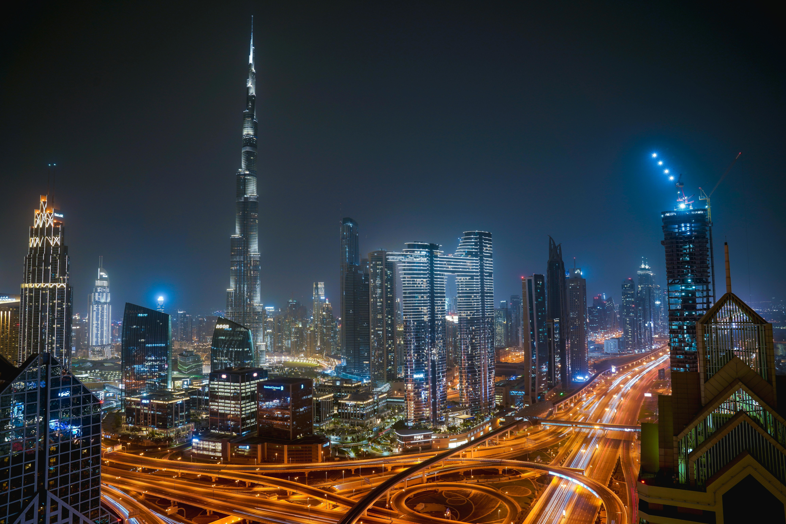
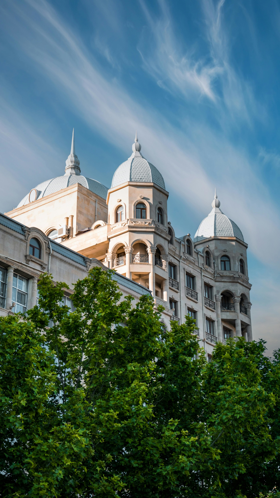
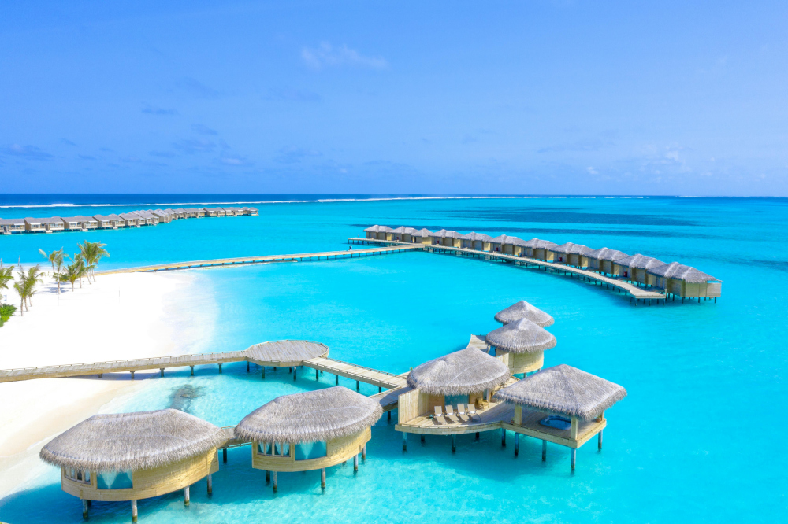
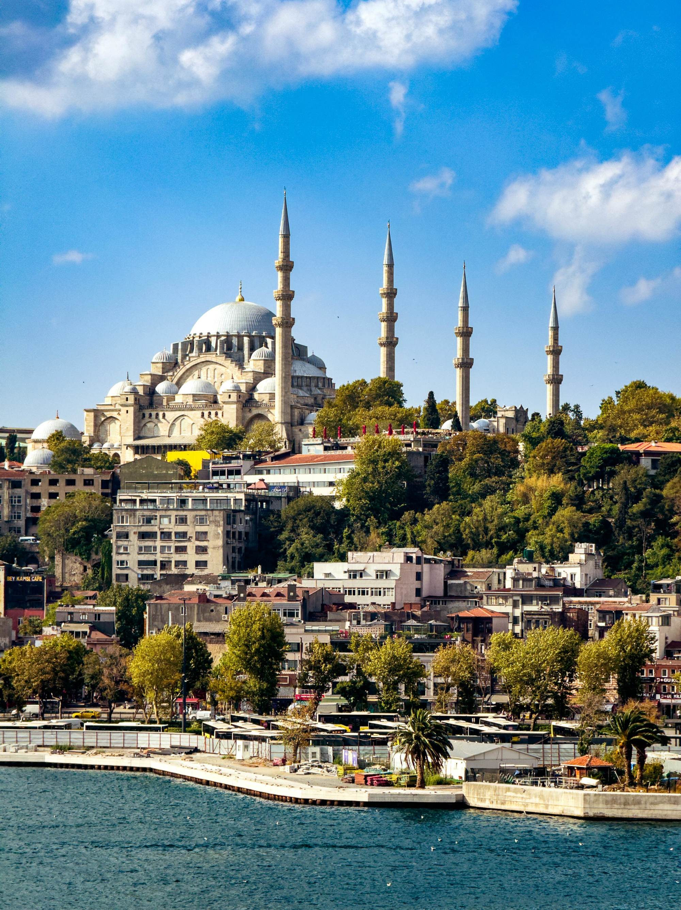

My Dream Escapes
Welcome! It's a place where we dream together to travel around the world! Traveling opens doors to new experience, cultures, and unforgettable memories that you can capture.These beautiful places are known for their warm weather, desert sands, clear blue seas, and sky, relaxing atmosphere along with so many fun activities, foods, and fun attractions.
In this website, I will be sharing the information and pictures about some of the beautiful countries around the world which I dream to travel to in the future, and you might also love too!
Dubai, United Arab Emirates

Dubai in the United Arab Emirates is a beautiful place known for its warm weather, desert sands, and clear blue sky. It has a mix of modern city life and traditional culture with modern buildings, tall and beautiful skyscrapers, places for food, and wide deserts that offer a unique experience. It offers many attractions and experiences that make it a great place to explore and create unforgettable memories.
Tbilisi, Georgia

Tbilisi blends historic charm with a modern vibe, from the narrow streets of Old Tbilisi to the scenic views at Narikala Fortress. Visitors can unwind in the well-known sulfur baths in Abanotubani while enjoying the city’s warm and welcoming culture. With its unique architecture, flavorful food, and lively atmosphere, Tbilisi is a memorable place that offers something different from typical travel destinations.
Male, Maldives

The Maldives is a tropical paradise known for clear blue waters, white beaches, and world-class snorkeling and relaxation. It is made up of many small islands, each offering peaceful views and a calm atmosphere. Visitors can enjoy luxury overwater villas and experience the natural beauty of the Indian Ocean while escaping busy city life.
Istanbul, Turkey

Istanbul is a historic city where Europe meets Asia, known for its iconic mosques, rich culture, and vibrant markets. The city offers a mix of old traditions and modern life, with busy streets full of food, shops, and local experiences. Visitors can explore famous sites like Hagia Sophia and Grand Bazaar while enjoying the unique atmosphere that makes Istanbul stand out.